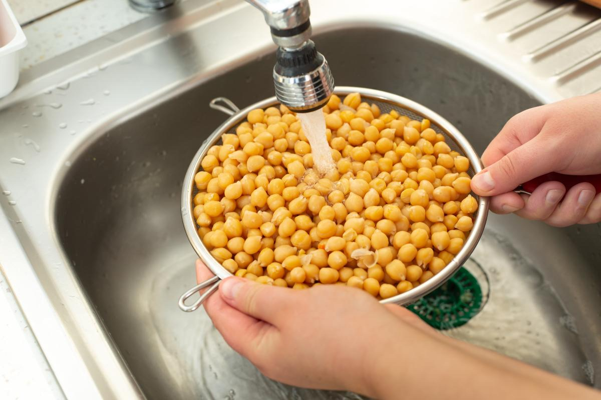
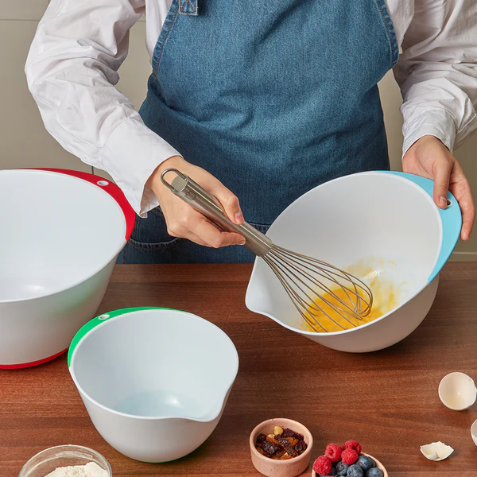
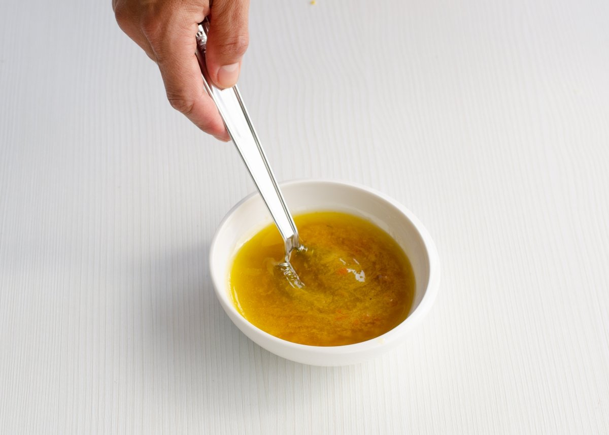

400 g de garbanzos cocidos
1 tomate grande
Medio pepino
Medio pimiento rojo
Media cebolla roja pequeña
2 cucharadas de aceite de oliva
1–2 cucharadas de zumo de limón
50–80 g de queso feta
Medio aguacate en dados
100 g de atún
Escurre y lava los garbanzos cocidos.
Corta el tomate, pepino, pimiento y cebolla en trozos pequeños.

Mezcla todo en un bol junto con los garbanzos.
Añade perejil picado, sal, pimienta.

Aliña con aceite de oliva y zumo de limón.
Remueve bien y guarda en la nevera unos minutos antes de servir.